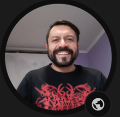

Francisco Pinto
Ingeniero en Informática · Docente · Innovación educativa · STEM/XR/IoT
Portafolio: panchopinto.github.io/portafolio-profesional
Perfil
Ingeniero en Informática y docente orientado a la integración de tecnología, ciencia aplicada e innovación en educación. Desarrolla experiencias de aprendizaje basadas en IoT, realidad virtual, realidad aumentada, impresión 3D, automatización, plataformas educativas y accesibilidad.
Su propósito es transformar el aula en un laboratorio de creación donde los estudiantes investigan, diseñan prototipos, interpretan datos, comunican hallazgos y generan soluciones vinculadas con su comunidad.
Áreas de especialidad
IoT educativoRealidad virtualImpresión 3DAutomatizaciónSTEMAccesibilidadEdTechEnfoque pedagógico
- Aprendizaje basado en proyectos.
- Altas expectativas con apoyos inclusivos.
- Uso de evidencia, datos y prototipos.
- Formación ciudadana, ambiental y tecnológica.
Proyectos representativos
- SIAMP: monitoreo piscícola con sensores, automatización y registro de datos.
- Invernadero inteligente: hidroponía, acuaponía, sensores y riego automatizado para aprendizaje STEM.
- Educación inmersiva: experiencias VR/AR/3D para ciencias, patrimonio e inclusión.
- Diseño Sin Barreras: impresión 3D y prototipado para accesibilidad educativa.
- PEVE / NeoTech EduLab: plataforma educativa con accesibilidad, progreso y recursos digitales.
Declaración de propósito
La tecnología educativa tiene sentido cuando permite que más estudiantes participen, creen y se reconozcan capaces de transformar su entorno. Por eso, cada proyecto busca unir contenido curricular, experiencia práctica, inclusión y vínculo con problemas reales.